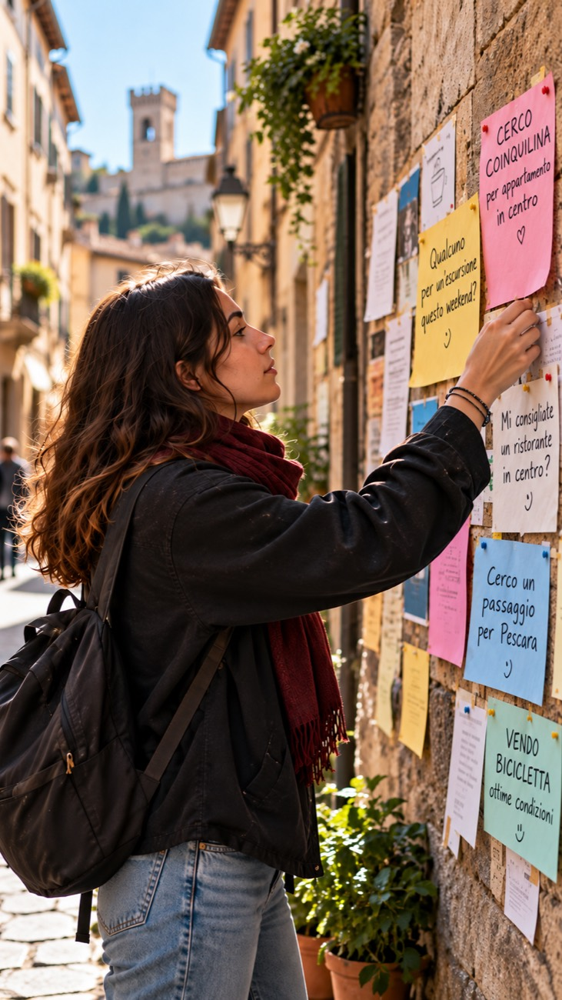

Con il tuo gruppo
Scegliete insieme cosa fareEventi, attività e Community: il gruppo nato su CEnTRO continua a uscire.
Indice


01Il problema
E quando lo scopri in tempo, spesso non hai nessuno con cui andarci.
CEnTRO
è l'app che ti conosce e ti porta fuori.
02Tutto in un posto
03Scegli il tuo percorso
Oppure continua a scorrere: vedrai tutto.
U1Come funziona
Un questionario su gusti, interessi e modo di stare con gli altri.
U2Nia, la tua mappa
U3Come funziona
Ogni giorno, le cose da fare in città, in ordine di affinità con te.

U4Con chi andarci
Con il tuo gruppo
Scegliete insieme cosa fareEventi, attività e Community: il gruppo nato su CEnTRO continua a uscire.
Da solo
Ti unisci, o crei tuPartecipi con persone affini oppure proponi un'attività: CEnTRO trova chi ha voglia della stessa cosa.
01Area · Eventi
Il feed mette per primi gli eventi più affini, anche quelli che non avresti mai cercato.
02Area · Community
Chiunque propone un'attività e arrivano persone affini con cui farla.

03Area · Spotted
Domande, consigli e aiuti tra le persone della città.
04Area · Esplora
Bandi, concorsi ed esperienze in azienda, scelti per interessi, requisiti e scadenze.
05Area · Casa
Annunci collegati alle tue esigenze e alle preferenze di convivenza.
A1Per le aziende
La tua proposta arriva prima a chi è affine, anche se non la stava cercando.
A2Abbonamento Discover
A3Strumenti avanzati
A4CEnTRO Insights
Business · Housing · Event · Market Explorer
Scopri i 4 strumentiI1Per chi investe
Le persone la usano per uscire. Le aziende pagano per raggiungerle e capirle.
I2Tre fonti di ricavo
Negozi e inserzionisti pagano per arrivare a chi ha i gusti giusti.
Discover per farsi proporre da Nia, strumenti di gestione e CEnTRO Insights.
Una quota su biglietti e prenotazioni che passano dall'app.
I3Perché può crescere
Un dato che altri non hanno: ciò che le persone dicono e ciò che fanno, insieme.
I4Cosa dimostreremo
→Prossimo passo